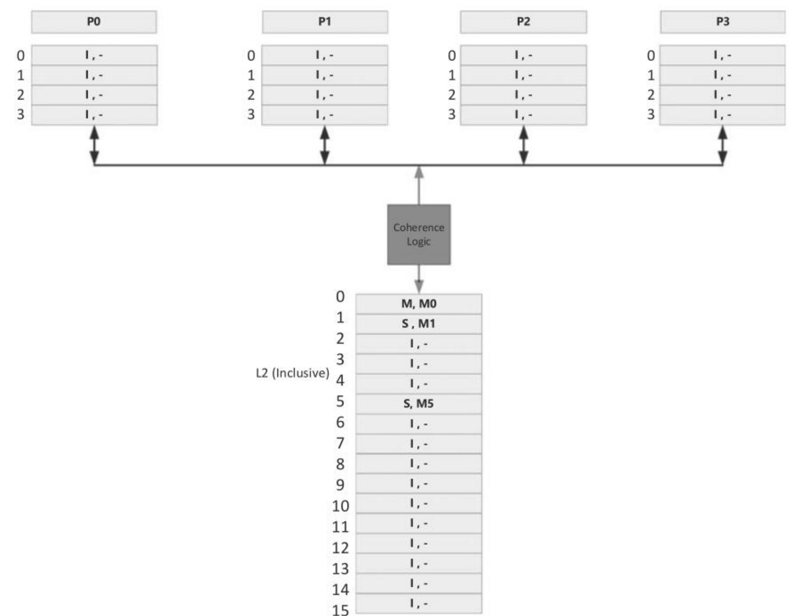
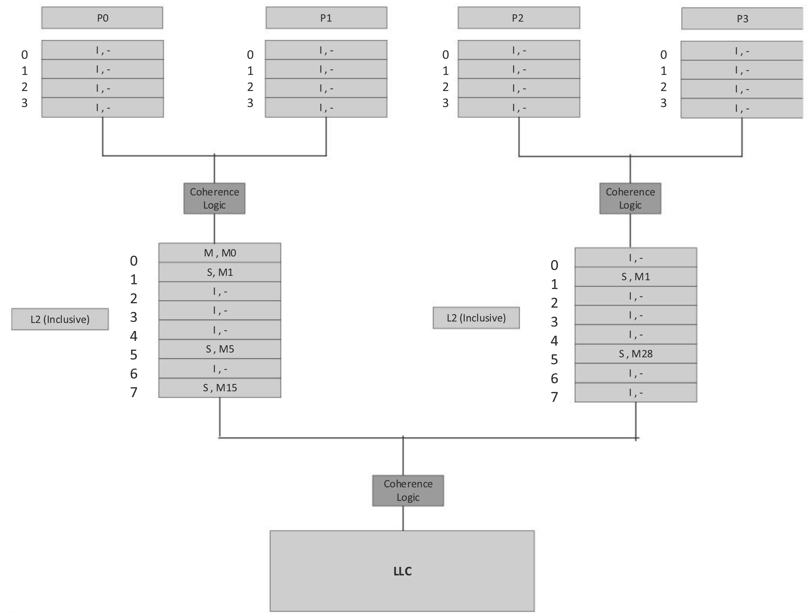
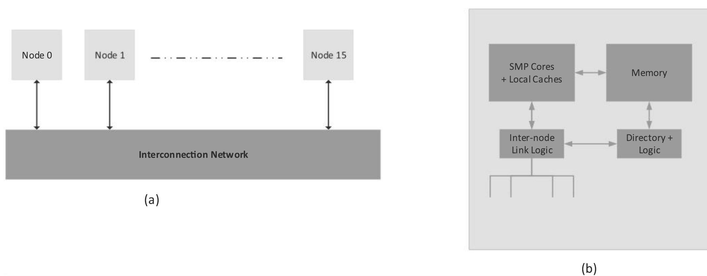

案例研究与习题（Amr Zaky）
案例研究 1：单芯片多核多处理器
本案例研究涉及的概念
- 监听一致性协议的状态转换与动作
- 监听一致性协议的性能
- 监听一致性协议实现上的优化
- 同步及其对 Cache 一致性支持的利用
事务记号。 本案例研究用如下记号表示一次访存：
「Pi, r/w, Mj」表示处理器核 i 读/写第 j 号存储块。例如，「P2, r, M3」表示处理器核 2 读第 3 号存储块。
Cache 的配置和策略。 本案例研究中的 Cache（L1 和 L2）都是直接映射、写回、写分配的 Cache。L2 Cache 对与它相连的各个 L1 Cache 是包含的。所有 L1 Cache 和 L2 Cache 的行大小都相同，都等于一个存储块的大小。
一致性协议。 采用写作废的监听协议，状态有 M、S、I 三种，与 5.3 节相同。
存储器的分布和编址。
5.1 [20] <5.3> 图 5.35 是一个 4 处理器的 SMP。每个处理器核有一个私有的 L1 Cache，所有核共享一个 L2 Cache。各 Cache 的配置和策略见本案例研究开头的说明。L2 各 Cache 行的初始状态和数据见图：L2 某个块项中标有 Mi，表示该项缓存的是第 i 号存储块。

- 对下面这个读写序列，说明随着序列的执行，各 Cache 行的状态如何变化，各 Cache 和监听逻辑分别执行什么动作。序列中「x || y」表示操作 x 之后是操作 y，Mi 指第 i 号物理存储块。
<P0, r, M0 || P3, w, M1 || P1, r, M5 || P2, r, M5 || P0, r, M0 || P3, r, M1 || P2, w, M5>5.2 [30] <5.3> 图 5.36 给出了所用监听协议实现中各项操作的延迟（以处理器周期计）。
图 5.36 监听协议各项操作的延迟。tag访问与读数据访问同时进行，如果读失效，读出的数据就丢弃。写则不同，必须等 tag 访问确认写命中之后才能访问数据阵列，所以一次写命中需要两个周期。这样做的前提是：时钟周期太短，容纳不下先访问 tag、再访问数据这样串行的两步。
| 访问 | 处理器周期数 | 用途 |
|---|---|---|
| L1 tag 访问 | 1 | L1 读/写命中；失效的第一个周期；来自一致性逻辑的监听查询 |
| L1 数据访问 | 1 | L1 读（与 tag 访问同时进行）；L1 写 |
| L2 tag 访问 | 6 | L1 失效 |
| L2 数据访问 | 12 | L1 写回；L1 重填 |
| 一致性逻辑访问 | 1 | L1 失效；L1 升级失效（作废）；L1 对一致性逻辑的响应 |
例如，P1 写失效，而所写的存储块在 P2 的 L1 Cache 中处于已修改状态，这时各步的延迟如图 5.37 所示。
图 5.37 写失效的延迟
| 步骤 | 延迟 |
|---|---|
| P1 访问 tag | 1 个周期 |
| P1（失效）发出作废请求 | 1 个周期 |
| 一致性逻辑向 P2（及所有核）的 tag 发监听查询 | 1 个周期 |
| P2 写回 L2 | 12 个周期 |
| L2 重填 P1 | 12 个周期 |
| 合计 | 27 个周期 |
假定总线上的各处理器在一个周期内就能报告自己对被作废的那一行所处的状态（L1 命中共享行、L1 命中已修改行、L1 失效）。
- 计算题 5.1 中读写序列的总延迟周期数。
5.3 [10/10] <5.3> 设 Cache 行的大小正好容纳数组 A 的一个元素，数组 A 全部在 L2 中，但不在 P0 的 L1 Cache 中。
for (…) A[i] = A[i]+1;- 上面这个 for 循环每次迭代有两次访存，它们共需多少个周期？
- 如果协议由 MSI 改为 MESI，这些访存需要多少个周期？
5.4 [15] <5.3> 为了进一步考察 MSI 和 MESI 协议的性能，请解释：采用 MSI 协议时，下面两个循环的数据访问所需周期数为什么不同（假定 A[i] 起初不在 L1 Cache 中，但数组 A 全部在 L2 中）；而采用 MESI 协议时，两者的周期数应当相差不大。
for (…) A[i] = A[i-1] +1;
for (…) A[i] = A[i]+1;5.5 [15/15] <5.3> 考虑下面的读写序列：
<P0, r, M0 || P3, w, M1 || P1, r, M5 || P2, r, M5 || P2, r, M0 || P0, r, M1 || P2, w, M1>- 假定所访问的存储块都不在 L1 Cache 中，而全部在 L2 Cache 中。
- 计算上述读写序列的总延迟周期数。
- 如果一个处理器核可以直接把数据提供给另一个核，不必等待 L2 来提供，总延迟周期数是多少？假定从一个处理器的 L1 向另一个 L1 Cache 传送数据需要 4 个周期。
下面改用另一种 L2 Cache 结构，如图 5.38 所示：每两个核共享一个私有的 L2 Cache。私有 L2 对它所连接的各核的 L1 Cache 是包含的；同时假定末级 Cache（LLC，Last-Level Cache）对这两个 L2 Cache 也是包含的。L1 中某个 Cache 行失效时，由 L2 提供；如果 L2 也失效，就从 LLC 取（LLC 可能还要从存储器取）。从 LLC 取来的 Cache 行先写入 L2，再转交给提出请求的 L1。有一致性逻辑时，如果这一行还在其他某个 Cache（L1、L2 或 LLC）中，这个过程通常需要执行一致性动作，还可能改变该 Cache 行的状态。

5.6 [20] <5.3> 针对这种新配置，讨论监听协议如何实现。例如，访问存储块 M38 时 L1 和 L2 都失效，此后 P0 的 L1 和（P0/P1 共享的）L2 中相应的行分别处于什么状态？我们也许会想完全不要 L1 一致性逻辑（L1 与 L2 之间），只用 L2 一致性逻辑（L2 与 LLC 之间）；但实现了 L1/L2 一致性逻辑，就有机会做一些性能优化。请举一个例子。
5.7 [10] <5.3> 解释为什么在这种配置下，L2 Cache 采用 MESI 协议、同时 L1 Cache 采用写一次（write-once）协议，能够减少一致性流量。所谓写一次的 L1 Cache 策略，就是对一个 Cache 行的第一次写按写直达方式处理，此后的写按写回方式处理。
5.8 [20] <5.3> 计算下面这个访存序列的读写延迟总周期数。假定采用 MSI 协议。
<P0, r, M0 || P3, w, M1 || P1, r, M5 || P2, r, M5 || P1, r, M0 || P0, r, M1 || P2, w, M1>5.9 [20] <5.5> 下面是 5.5 节讨论过的自旋锁循环的两种实现。
lockit: addi x2, x0, #1 lockit: ld x2, 0(x1)
EXCH x2,0(x1) bnez x2, lockit
bnez x2, lockit bnez x2, lockit
addi x2, x0, #1
EXCH x2,0(x1)- 锁由 P2 持有，P0 和 P1 争用这把锁。分别给出两种实现中自旋锁循环的时序。
案例研究 2：简单的基于目录的一致性
本案例研究涉及的概念
- 目录一致性协议的状态转换
- 一致性协议的性能
- 一致性协议的优化

一致性协议。 采用基于目录的写作废协议，状态有 M、S、I 三种，与 5.4 节相同。
存储器的分布和编址。 存储器平均分配给各个节点。存储块地址的最高 4 位表示该存储器所在的节点号。除非题目中另有说明，存储块的大小和每个分布式存储器中的块数都不作规定。
事务记号。 本案例研究用如下记号表示一次访存：
「Ni, r/w, M (m, n)」表示节点 i 读/写节点 m 上的第 n 号存储块。例如，「N2, r, M (3,7)」表示节点 2 读节点 3 上的第 7 号存储块。
Cache 的配置和策略。 本案例研究中的 Cache（L1、L2……）都是直接映射、写回、写分配的 Cache。每一级 Cache 对它上面各级（更靠近处理器的）Cache 都是包含的。所有 Cache 的行大小都相同，都等于一个存储块的大小。
5.10 [20] <5.4> 假定所有 Cache 块起初都处于无效状态。对下面的访存序列，说明随着序列的执行，各 Cache 行的状态如何变化，各目录控制器执行什么动作，以及交换了哪些一致性消息。序列中「x || y」表示操作 x 之后是操作 y。
<N0, r, M (0, 4) || N3, w, M (1, 5) || N7, r, M (1,5) || N2, r, M (5,2) || N0, w, M (0,4) || N13, r, M (1,5) || N2, w, M(5,2)>5.11 [5/10] <5.4> 设每个节点分配 1 GiB 的分布式存储器，存储块大小为 128 字节。
给出节点目录数据结构的一种直接的布局，计算实现它总共需要多少位，并计算目录大小占存储器容量的百分比。
按 (a) 中给出的布局，画出节点 1 的目录内容示意。注意，凡是访问存储块 M(1, *) 的操作，访问的都是节点 1 的目录。
5.12 [5/5/5] <5.4> 为了缩小目录，可以对目录结构做下面两项修改，可以只做一项，也可以两项都做：
- 让每个目录项记录比一个块更大的一段存储器的一致性状态，从而减少每个目录的项数；
- 让目录项记录的是多个节点组成的组对存储器的使用情况，而不是单个节点的使用情况，从而缩小每个目录项。
每个目录项负责 4 KiB 存储器的使用情况（每个节点分配 1 GiB 分布式存储器），计算目录数据结构的项数。
系统的 16 个节点分为 4 组（每组 4 个节点），目录项记录的是一组节点（而不是单个节点）对存储块的拥有情况，计算一个目录项的大小。
同时采用上述两项优化，计算目录的大小。
5.13 [15/5] <5.4> 按题 5.11 中目录的直接实现，画出实现 MSI 协议所需的一致性消息集合，写清地址、源/目的节点、数据和命令等细节。
画出每类消息包含的各个字段，并计算每类消息的大小（以位计）。
必要时用额外的位填充消息，使消息大小为字节的整数倍，重做 (a)。
5.14 [10/10/10/10/5] <5.4> 题 5.12 提出的目录缩小优化是有代价的：实现基于目录的一致性协议所需的消息数会增加。
用下面的访存序列比较不同优化下交换的消息数：
<N0, r, M (0, 4) || N3, w, M (0, 5) || N7, r, M (1,60) || N5, r, M (1,59) || N0, w, M (0,5)>不做目录缩小优化（如题 5.11），说明执行的动作和交换的一致性消息。
实施题 5.12 (a) 的修改（每个目录项管理 4 KiB 的存储块），说明执行的动作和交换的一致性消息。
实施题 5.12 (b) 的修改（节点分为四组：(G0: N0, N1, N2, N3)、(G1: N4, N5, N6, N7)、(G2: N8, N9, N10, N11)、(G3: N12, N13, N14, N15)），说明执行的动作和交换的一致性消息。
同时实施题 5.12 (a) 和 (b) 的修改（节点分为四组：(G0: N0, N1, N2, N3)、(G1: N4, N5, N6, N7)、(G2: N8, N9, N10, N11)、(G3: N12, N13, N14, N15)），说明执行的动作和交换的一致性消息。
填写下表：给出每个节点的目录大小（位）和执行上述事务序列所交换的消息数，二者都是一致性组中节点数和每个目录项所管理块大小的函数。
| 一致性组中的节点数 | 每个目录项管理的存储块大小 | 每个节点的目录大小（位） | 上述事务序列交换的消息数 |
|---|---|---|---|
| 1 | 128 字节 | ||
| 1 | 4 KiB | ||
| 4 | 128 字节 | ||
| 4 | 4 KiB |
5.15 [10] <5.4> 把题 5.12 (c) 的优化推到逻辑上的极端，就可以取消节点目录，不再记录哪个节点在使用哪个存储块。假定仍保留部分目录逻辑，这种组织方式需要交换的一致性消息非常多。消息开销虽然这么大，使用目录逻辑还有没有价值？提示：假定从任一节点 i 发往任一节点 j 的消息在互连网络中走确定的路径，并按顺序处理；再假定节点 i 和 j 都要访问（读或写）节点 k 中的一个存储块。
案例研究 3：存储一致性
本案例研究涉及的概念
- 顺序一致性（SC）模型下程序的合法行为
- SC 模型所允许的硬件优化
- 用同步原语使一种存储一致性模型模拟更严格的模型
5.16 [10/5/5] <5.6> 下面的代码段是两个进程在两个处理器上运行的 Peterson 互斥算法。这个算法是为了说明：不使用硬件同步原语，也可以实现互斥。
初始条件：enter0、enter1 = false（起初 P0、P1 两个进程都不打算进入临界区）。
P0: enter0 ← true P1: enter1 ← true
turn ← 0 turn ← 1
wait-for ((not enter1) OR turn == 1) wait-for ((not enter0) OR turn == 0)
begin begin
/* critical section */ /* critical section */
end end
enter0 ← false enter1 ← false证明：两个进程都要进入临界区，而且处理器遵循顺序一致性（SC）模型时，每次只有一个进程能进入临界区。
给出 P0、P1 读写操作的一种 SC 次序，使 P0 先于 P1 进入临界区。
给出 P0、P1 读写操作的一种 SC 次序，使 P1 先于 P0 进入临界区。
5.17 [10] <5.6> 证明：处理器实现的是释放一致性（RC）模型时，不能保证 Peterson 算法行为正确。给出某种 RC 次序，使进程 P1 和 P2 能同时进入临界区。
5.18 [5/5/5] <5.6> 假定 a 和 b 的初值都是 0。
P0: a=1
while (b == 0)
print ("p0 done\n")
P1: b=1
while (a == 0)
print ("p1 done\n")采用 SC 模型时，上面两个进程可能打印出哪些结果？
在采用 RC 模型的系统上原样执行这段代码，两个进程有可能都永远跳不出 while 循环，解释其原因。
给出一种编译器的代码重排，使采用 SC 模型的系统也可能出现 (b) 中描述的现象。
5.19 [10] <5.6> 在题 5.18 中，如果 P0 在 P1 把 b 置为 1 之前就把 b 预取到自己的 Cache 中，在采用 SC 模型的系统上会不会产生意外的结果？假定系统有 Cache 一致性机制。
5.20 [10/10] <5.6> 给题 5.15 的互斥代码加上同步原语，使它在实现 RC 模型的系统上行为正确。
5.21 [20/20/20] <5.6> 顺序一致性（SC）要求所有的读和写看起来都按某种全序执行。为此，处理器在某些情况下必须先停顿，然后才能提交一条读指令或写指令。考虑下面的代码序列：
write A
read B其中 write A 引起 Cache 失效，read B 则 Cache 命中。在 SC 下，处理器必须让 read B 停顿，直到能够为 write A 排定次序（从而执行它）为止。SC 的简单实现会让处理器一直停顿，直到 Cache 收到数据、能够执行这次写为止。
较弱的存储一致性模型放松了对读写次序的约束，处理器需要停顿的情况也就少了。全存储定序（TSO，Total Store Order）模型要求所有的写看起来按某种全序发生，但允许处理器的读越过它自己的写。于是处理器可以采用写缓冲，用来存放已经提交、但相对于其他处理器的写还没有排定次序的写。在 TSO 下，读可以越过写缓冲（还可能从写缓冲中旁路取得数据），这在 SC 下是不允许的。
假定每个周期可以执行一次存储器操作；在 Cache 中命中的操作，以及可以由写缓冲满足的操作，都不引入停顿周期；失效的操作要经历 100 个周期的存储器延迟。
在 SC 和 TSO 两种模型下，每个操作之前分别有多少个停顿周期？（写缓冲最多只能存放一个写。）访存操作用题 5.1 引入的记号描述。
- [20] <5.6>
P0, W, M110 //assume miss (no other cache has the line)
P0, R, M108 //assume miss (no other cache has the line)- [20] <5.6>
P0, R, M110 //assume miss (no other cache has the line)
P0, W, M100 // assume hit.- [20] <5.6>
P0, W, M100 //assume miss.
P0, W, M100 // assume hit.各操作后的注释含义：「assume miss (no other cache has the line)」表示假定失效（其他 Cache 中都没有这一行），「assume hit」表示假定命中，「assume miss」表示假定失效。
习题
5.22 [15/20/10] <5.1> 本题考察互连网络拓扑对程序 CPI 的影响。程序运行在一台有 64 个处理器的分布式存储多处理器上，处理器时钟频率为 2.0 GHz。某应用在所有访问都命中 Cache 时，基本 CPI 为 0.75。假设：
- 0.2% 的指令涉及一次远程通信访问；
- 一次远程通信访问的代价为 \((100 + 10h)\) ns，其中 \(h\) 是这次访问往返远程处理器存储器所经过的通信网络跳数；
- 所有通信链路都是双向的。
a. [15] <5.1> 64 个处理器分别连成环、\(8 \times 8\) 的处理器网格和超立方体时，远程通信在最坏情况下的代价各是多少？（提示：\(2^n\) 超立方体上最长的通信路径有 \(n\) 条链路。）
b. [20] <5.1> 把该应用在没有远程通信时的基本 CPI，与 (a) 中三种拓扑下各自达到的 CPI 作比较。
5.23 [15] <5.2> 对写直达 Cache 而言，图 5.6 的基本监听协议应当怎样修改？与写回 Cache 相比，写直达 Cache 不再需要的主要硬件功能是什么？
5.24 [20/20] <5.2> 回答下列问题：
a. [20] <5.2> 在基本的监听 Cache 一致性协议（图 5.6）中增加一个干净的独占状态，并按该图所用的有限状态机形式画出协议。
b. [20] <5.2> 在 (a) 的协议中再增加一个「拥有」（owned）状态，同样按图 5.6 的有限状态机形式加以描述。
5.25 [15] <5.2> 针对伪共享问题，有人提出给每个字设一个有效位。这样，协议可以只作废一个字，而不必把整个块逐出；一个处理器写块中的某一部分时，另一个处理器仍可以在自己的 Cache 中保留块的其余部分。这一改动会给基本的监听 Cache 一致性协议（图 5.6）带来哪些额外的复杂性？请考虑协议所有可能的动作。
5.26 [15/20] <5.3> 本题研究：在共享存储多处理器系统中，处理器采用激进的指令级并行技术会产生什么影响。考虑两个系统，除处理器外完全相同：
- 系统 A 的处理器采用简单的单发射、按序流水线；
- 系统 B 的处理器四发射、乱序执行，重排序缓冲（ROB）有 64 项。
a. [15] <5.3> 按照图 5.11 的做法，把执行时间分为指令执行、Cache 访问、访存和其他停顿几部分。你预计系统 A 和系统 B 的这几部分各有什么差别？
b. [10] <5.3> 根据 5.3 节对 OLTP 工作负载行为的讨论，OLTP 工作负载与其他基准测试程序有一个重要区别，使它从更激进的处理器设计中得到的好处有限。这个区别是什么？
5.27 [15] <5.3> 为了避免伪共享，应当怎样修改应用程序的代码？哪些工作可以由编译器完成，哪些可能需要程序员给出编译指示？
5.28 [15] <5.3> 某应用要统计某个单词在大量文档中出现的次数。数量很多的处理器分担这项工作，各自搜索不同的文档，得到一个由 32 位整数构成的大数组 word_count，每个元素是该单词在某一篇文档中出现的次数。第二阶段，计算转移到一台只有 4 个处理器的小型 SMP 服务器上进行：每个处理器对大约 1/4 的数组元素求和，最后由一个处理器算出总和。代码如下：
for (int p = 0; p<=3; p++) // Each iteration of is executed on a separate processor.
{
sum [p] = 0;
for (int i = 0; i < n/4; i++) // n is size of word_count and is divisible by 4
sum[p] = sum[p] + word_count[p+4*i];
}
total_sum = sum[0] + sum[1]+sum[2]+sum[3] //executed only on processor.代码注释的意思依次是：外层循环的每次迭代在一个单独的处理器上执行；n 是 word_count 的大小，能被 4 整除；最后一行只在一个处理器上执行。
a. 假设每个处理器有一个 32 字节的 L1 数据 Cache，指出这段代码存在哪些 Cache 行共享（真共享或伪共享）。
b. 改写代码，减少对数组 word_count 元素的失效次数。
c. 给出一种手工修改代码的办法，消除其中所有的伪共享。
5.29 [15] <5.4> 假设采用基于目录的 Cache 一致性协议。目录中现有的信息表明，处理器 P1 以「独占」方式持有数据。如果此时目录又收到 P1 对同一 Cache 块的请求，这可能意味着什么？目录控制器应当怎样处理？（这类情况称为「竞争条件」，一致性协议之所以很难设计和验证，原因就在这里。）
5.30 [20] <5.4> 本地 Cache 控制器已经替换掉的行，目录控制器仍可能向它发送作废。为了避免这类消息，同时保持目录的一致，可以采用替换提示，即通知目录控制器某个块已被替换的消息。修改 5.4 节的目录一致性协议，使它使用这种替换提示。
5.31 [20/15/20/15] <5.4> 用全位向量直接实现目录有一个缺点：目录信息的总量与「处理器数 × 存储块数」成正比。如果存储器容量随处理器数线性增长，目录总量就随处理器数的平方增长。实际上，目录每个存储块只需要 1 位（存储块通常为 32～128 字节），所以处理器数为中小规模时，这个问题并不严重。例如，块大小为 128 字节、处理器数为 \(P\) 时，目录存储量与主存容量之比为 \(P/(128 \times 8) = P/1024\)；\(P = 128\) 时，开销为 12.5%。我们注意到，需要保存的信息量其实只需与每个处理器的 Cache 容量成正比，据此就能避免这个问题。下面几小题考察几种解决办法。
a. [20] <5.4> 获得可扩展目录协议的一种办法，是把多处理器组织成一个逻辑上的层次结构：处理器是层次结构的叶节点，每棵子树的根上设一个目录。每个子树的目录记录两类信息：一是哪些后代缓存了哪些存储块；二是宿主在该子树中、却被缓存在子树之外的存储块。假设每个目录都是全相联的，计算各目录记录处理器信息所需的存储量。答案中既要包含层次结构每一层的节点数，也要包含节点总数。
b. [15] <5.4> 减小目录规模的另一种办法，是在任一时刻只允许目录中有限数量的存储块处于共享状态。把目录实现为一个四路组相联的 Cache，其中存放完整的位向量。目录 Cache 发生失效时，选出一个目录项并将其作废。说明这种组织怎样工作，具体讲清块被读、被写、被替换以及写回存储器时会发生什么。修改图 5.20 中的协议，反映这种目录组织所需要的新转换。
c. [20] <5.4> 也可以不减少目录项的数量，而是采用非稠密的位向量。例如，每个目录项都设为 9 位：块只缓存在宿主之外的一个节点中时，这个字段存放该节点的编号；块缓存在宿主之外的多个节点中时，这个字段是一个位向量，每一位代表一组 8 个处理器，表示其中至少有一个处理器缓存了该块。以一台由 8 个 8 处理器组构成的 64 处理器 DSM 机器为例，说明这种方案怎样工作。
d. [15] 减小目录规模的一种极端做法，是实现一个「空」目录：每个处理器中的目录都不存储任何存储器状态，只负责接收请求，并视情况转发出去。对 DSM 系统来说，有这样的目录与根本没有目录相比，好处是什么？
5.32 [10] <5.5> 用 load linked/store conditional 指令对实现经典的 compare-and-swap（比较并交换）指令。
5.33 [15] <5.5> 一种常用的性能优化是对同步变量进行填充，使同一个 Cache 行中不再有其他有用数据。构造一个例子，说明这一优化在某些情况下非常有用。假设采用监听式写作废协议。
5.34 [30] <5.5> 在多核处理器上实现 load linked/store conditional 指令对，一种可能的做法是限定这两条指令只使用不经 Cache 的存储器操作。一个监视单元截获所有核对存储器的读和写，记录每条 load linked 指令来自哪里，并记录在 load linked 与对应的 store conditional 之间是否插入了其他 store。对于会失败的 store conditional，监视单元可以阻止它写入任何数据，并通过互连信号通知处理器这次 store 失败了。
为支持四核 SMP 的存储系统设计这样一个监视单元。要考虑到：
- 读请求和写请求的数据大小一般各不相同（4、8、16、32 字节）；
- 任何存储单元都可能是 load linked/store conditional 指令对的目标，监视单元应当假定，对任一单元的 load linked/store conditional 访问，都可能与对同一单元的普通访问交错进行；
- 监视单元的复杂度应当与存储器容量无关。
5.35 [25] <5.5> 在两级 Cache 层次中，L1 离处理器较近。证明：如果 L2 的相联度不低于 L1，两级 Cache 都采用 LRU 替换，并且块大小相同，那么不需要任何额外操作就能保持包含性。
[讨论] <5> 对多处理器系统作详细的性能评估时，系统设计者使用的工具有三种：
- 解析模型：用数学表达式为程序的行为建模；
- 踪迹驱动模拟：在真实机器上运行应用，生成踪迹（通常是访存操作的踪迹），再把这些踪迹送入 Cache 模拟器或带简单处理器模型的模拟器中重放，预测各种参数改变后系统的性能；
- 执行驱动模拟：模拟整个执行过程，为处理器状态等维护等价的结构。
a. 这几种方法在准确度和速度上各有什么取舍？
b. CPU 踪迹如果采集得不仔细，会带上采集所用系统的痕迹。以转移预测和自旋等待同步为例讨论这个问题。（提示：纯 CPU 踪迹中没有程序本身，只有踪迹。）
5.36 [40] <5.7, 5.9> 增加处理器数目时，多处理器和机群的性能通常会提高，理想情况是 \(n\) 个处理器得到 \(n\) 倍的加速比。这个「有偏」基准测试程序的目标正相反：编写一个程序，处理器加得越多，性能越差。也就是说，在多处理器或机群上，用一个处理器运行这个程序最快，用两个处理器慢一些，用四个处理器比两个更慢，依此类推。对每种组织结构而言，造成这种反线性加速比的关键性能特征是什么？